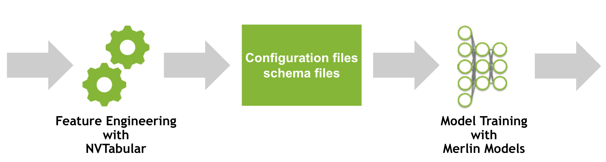

# Copyright 2022 NVIDIA Corporation. All Rights Reserved.
#
# Licensed under the Apache License, Version 2.0 (the "License");
# you may not use this file except in compliance with the License.
# You may obtain a copy of the License at
#
# http://www.apache.org/licenses/LICENSE-2.0
#
# Unless required by applicable law or agreed to in writing, software
# distributed under the License is distributed on an "AS IS" BASIS,
# WITHOUT WARRANTIES OR CONDITIONS OF ANY KIND, either express or implied.
# See the License for the specific language governing permissions and
# limitations under the License.
# ==============================================================================
From ETL to Training RecSys models - NVTabular and Merlin Models integrated example
This notebook is created using the latest stable merlin-tensorflow container.
Overview
In 01-Getting-started.ipynb, we provide a getting started example to train a DLRM model on the MovieLens 1M dataset. In this notebook, we will explore how Merlin Models uses the ETL output from NVTabular.
Learning objectives
This notebook provides details on how NVTabular and Merlin Models are linked together. We will discuss the concept of the schema file.
Merlin
Merlin is an open-source framework for building large-scale (deep learning) recommender systems. It is designed to support recommender systems end-to-end from ETL to training to deployment on CPU or GPU. Common deep learning frameworks are integrated such as TensorFlow (and PyTorch in the future). Among its key benefits are the easy-to-use and flexible APIs, availability of popular recsys architectures, accelerated training and evaluation with GPU and scaling to multi-GPU or multi-node systems.
Merlin Models and NVTabular are components of Merlin. They are designed to work closely together.
Merlin Models is a library to make it easy for users in industry or academia to train and deploy recommender models with best practices baked into the library. Data Scientists and ML Engineers can easily train standard and state-of-the art models on their own dataset, getting high performance GPU accelerated models into production. Researchers can build custom models by incorporating standard components of deep learning recommender models and benchmark their new models on example offline datasets.
NVTabular is a feature engineering and preprocessing library for tabular data that is designed to easily manipulate terabyte scale datasets and train deep learning (DL) based recommender systems. It provides high-level abstraction to simplify code and accelerates computation on the GPU using the RAPIDS Dask-cuDF library under the hood.
Integration of NVTabular and Merlin Models
In this notebook, we focus on an important piece of an ML pipeline: feature engineering and model training.
If you use NVTabular for feature engineering, NVTabular will output (in addition to the preprocessed parquet files), a schema file describing the dataset structures. The schema contains columns statistics, tags and metadata collected by NVTabular. Here are some examples of such metadata computed by some NVTabular preprocessing ops:
Categorify: This op transforms categorical columns into contiguous integers (
0, ..., |C|) for embedding layers. The columns that are processed by this op have save in the schema its cardinality|C|and are also tagged as CATEGORICAL.Normalize: This op applies standardization to normalize continuous features. The mean and stddev of the columns are saved to the schema, also being tagged as CONTINUOUS.
The users can also define their own tags in the preprocessing pipeline to group together related features, for further modeling purposes.
Let’s take a look on the MovieLens 1M example.
import os
import pandas as pd
import nvtabular as nvt
from merlin.models.utils.example_utils import workflow_fit_transform
import merlin.io
import merlin.models.tf as mm
from nvtabular import ops
from merlin.core.utils import download_file
from merlin.datasets.entertainment import get_movielens
from merlin.schema.tags import Tags
2022-05-03 09:41:22.016529: I tensorflow/core/platform/cpu_feature_guard.cc:152] This TensorFlow binary is optimized with oneAPI Deep Neural Network Library (oneDNN) to use the following CPU instructions in performance-critical operations: SSE3 SSE4.1 SSE4.2 AVX
To enable them in other operations, rebuild TensorFlow with the appropriate compiler flags.
2022-05-03 09:41:23.018388: I tensorflow/core/common_runtime/gpu/gpu_device.cc:1525] Created device /job:localhost/replica:0/task:0/device:GPU:0 with 20268 MB memory: -> device: 0, name: NVIDIA A100-SXM4-40GB, pci bus id: 0000:4e:00.0, compute capability: 8.0
We will use the utils function to download, extract and preprocess the dataset.
input_path = os.environ.get("INPUT_DATA_DIR", os.path.expanduser("~/merlin-models-data/movielens/"))
train, valid = get_movielens(variant="ml-1m", path=input_path)
WARNING:tensorflow:From /models/merlin/models/utils/nvt_utils.py:14: is_gpu_available (from tensorflow.python.framework.test_util) is deprecated and will be removed in a future version.
Instructions for updating:
Use `tf.config.list_physical_devices('GPU')` instead.
WARNING:tensorflow:From /models/merlin/models/utils/nvt_utils.py:14: is_gpu_available (from tensorflow.python.framework.test_util) is deprecated and will be removed in a future version.
Instructions for updating:
Use `tf.config.list_physical_devices('GPU')` instead.
2022-05-03 09:41:23.192916: I tensorflow/core/common_runtime/gpu/gpu_device.cc:1525] Created device /device:GPU:0 with 20268 MB memory: -> device: 0, name: NVIDIA A100-SXM4-40GB, pci bus id: 0000:4e:00.0, compute capability: 8.0
/usr/local/lib/python3.8/dist-packages/cudf/core/dataframe.py:1292: UserWarning: The deep parameter is ignored and is only included for pandas compatibility.
warnings.warn(
P.s. You can also choose to generate synthetic data to test your models using generate_data(). The input argument can be either the name of one of the supported public datasets (e.g. “movielens-1m”, “criteo”) or the schema of a dataset (which is explained next). For example:
from merlin.datasets.synthetic import generate_data
train, valid = generate_data(input="movielens-1m", num_rows=1000000, set_sizes=(0.8, 0.2))
Understanding the Schema File and Structure
When NVTabular process the data, it will persist the schema as a file to disk. You can access the schema from the Merlin Dataset class (like below).
The schema can be interpreted as a list of features in the dataset, where each element describes metadata of the feature. It contains the name, some properties (e.g. statistics) depending on the feature type and multiple tags.
train.schema
| name | tags | dtype | is_list | is_ragged | properties.num_buckets | properties.freq_threshold | properties.max_size | properties.start_index | properties.cat_path | properties.embedding_sizes.cardinality | properties.embedding_sizes.dimension | properties.domain.min | properties.domain.max | properties.value_count.min | properties.value_count.max | |
|---|---|---|---|---|---|---|---|---|---|---|---|---|---|---|---|---|
| 0 | userId | (Tags.USER, Tags.CATEGORICAL, Tags.USER_ID) | int32 | False | False | NaN | 0.0 | 0.0 | 0.0 | .//categories/unique.userId.parquet | 6041.0 | 210.0 | 0.0 | 6041.0 | NaN | NaN |
| 1 | movieId | (Tags.ITEM, Tags.CATEGORICAL, Tags.ITEM_ID) | int32 | False | False | NaN | 0.0 | 0.0 | 0.0 | .//categories/unique.movieId.parquet | 3688.0 | 159.0 | 0.0 | 3688.0 | NaN | NaN |
| 2 | title | (Tags.CATEGORICAL) | int32 | False | False | NaN | 0.0 | 0.0 | 0.0 | .//categories/unique.title.parquet | 3688.0 | 159.0 | 0.0 | 3688.0 | NaN | NaN |
| 3 | genres | (Tags.CATEGORICAL, Tags.ITEM) | int32 | True | True | NaN | 0.0 | 0.0 | 0.0 | .//categories/unique.genres.parquet | 19.0 | 16.0 | 0.0 | 19.0 | 1.0 | 6.0 |
| 4 | gender | (Tags.CATEGORICAL) | int32 | False | False | NaN | 0.0 | 0.0 | 0.0 | .//categories/unique.gender.parquet | 3.0 | 16.0 | 0.0 | 3.0 | NaN | NaN |
| 5 | age | (Tags.CATEGORICAL) | int32 | False | False | NaN | 0.0 | 0.0 | 0.0 | .//categories/unique.age.parquet | 8.0 | 16.0 | 0.0 | 8.0 | NaN | NaN |
| 6 | occupation | (Tags.CATEGORICAL) | int32 | False | False | NaN | 0.0 | 0.0 | 0.0 | .//categories/unique.occupation.parquet | 22.0 | 16.0 | 0.0 | 22.0 | NaN | NaN |
| 7 | zipcode | (Tags.CATEGORICAL) | int32 | False | False | NaN | 0.0 | 0.0 | 0.0 | .//categories/unique.zipcode.parquet | 3440.0 | 153.0 | 0.0 | 3440.0 | NaN | NaN |
| 8 | TE_age_rating | (Tags.CONTINUOUS, Tags.USER) | float64 | False | False | NaN | NaN | NaN | NaN | NaN | NaN | NaN | NaN | NaN | NaN | NaN |
| 9 | TE_gender_rating | (Tags.CONTINUOUS, Tags.USER) | float64 | False | False | NaN | NaN | NaN | NaN | NaN | NaN | NaN | NaN | NaN | NaN | NaN |
| 10 | TE_occupation_rating | (Tags.CONTINUOUS, Tags.USER) | float64 | False | False | NaN | NaN | NaN | NaN | NaN | NaN | NaN | NaN | NaN | NaN | NaN |
| 11 | TE_zipcode_rating | (Tags.CONTINUOUS, Tags.USER) | float64 | False | False | NaN | NaN | NaN | NaN | NaN | NaN | NaN | NaN | NaN | NaN | NaN |
| 12 | TE_movieId_rating | (Tags.CONTINUOUS, Tags.ITEM) | float64 | False | False | NaN | NaN | NaN | NaN | NaN | NaN | NaN | NaN | NaN | NaN | NaN |
| 13 | TE_userId_rating | (Tags.CONTINUOUS, Tags.USER) | float64 | False | False | NaN | NaN | NaN | NaN | NaN | NaN | NaN | NaN | NaN | NaN | NaN |
| 14 | rating_binary | (Tags.BINARY_CLASSIFICATION, Tags.TARGET) | int32 | False | False | NaN | NaN | NaN | NaN | NaN | NaN | NaN | NaN | NaN | NaN | NaN |
| 15 | rating | (Tags.REGRESSION, Tags.TARGET) | float32 | False | False | NaN | NaN | NaN | NaN | NaN | NaN | NaN | NaN | NaN | NaN | NaN |
We can select the features by name.
train.schema.select_by_name("userId")
| name | tags | dtype | is_list | is_ragged | properties.num_buckets | properties.freq_threshold | properties.max_size | properties.start_index | properties.cat_path | properties.embedding_sizes.cardinality | properties.embedding_sizes.dimension | properties.domain.min | properties.domain.max | |
|---|---|---|---|---|---|---|---|---|---|---|---|---|---|---|
| 0 | userId | (Tags.USER, Tags.CATEGORICAL, Tags.USER_ID) | int32 | False | False | None | 0.0 | 0.0 | 0.0 | .//categories/unique.userId.parquet | 6041.0 | 210.0 | 0 | 6041 |
We can also select features by tags. As we described earlier in the notebook, categorical and continuous features are automatically tagged when using ops like Categorify() and Normalize().
In our example preprocessing workflow for this dataset, we also set the Tags for the the user and item features, and also for the user_id and item_id, which are important for collaborative filtering architectures.
Alternatively, we can select them by Tag. We add column_names to the object to receive only names without all the additional metadata.
# All categorical features
train.schema.select_by_tag(Tags.CATEGORICAL).column_names
['userId',
'movieId',
'title',
'genres',
'gender',
'age',
'occupation',
'zipcode']
# All continuous features
train.schema.select_by_tag(Tags.CONTINUOUS).column_names
['TE_age_rating',
'TE_gender_rating',
'TE_occupation_rating',
'TE_zipcode_rating',
'TE_movieId_rating',
'TE_userId_rating']
# All targets
train.schema.select_by_tag(Tags.TARGET).column_names
['rating_binary', 'rating']
# All features related to the item
train.schema.select_by_tag(Tags.ITEM).column_names
['movieId', 'genres', 'TE_movieId_rating']
# The item id feature name
train.schema.select_by_tag(Tags.ITEM_ID).column_names
['movieId']
# All features related to the user
train.schema.select_by_tag(Tags.USER).column_names
['userId',
'TE_age_rating',
'TE_gender_rating',
'TE_occupation_rating',
'TE_zipcode_rating',
'TE_userId_rating']
# The user id feature name
train.schema.select_by_tag(Tags.USER_ID).column_names
['userId']
We can also query all properties of a feature. Here we see that the cardinality (number of unique values) of the movieId feature is 3682, which is an important information to build the corresponding embedding table.
train.schema.select_by_tag(Tags.ITEM_ID)
| name | tags | dtype | is_list | is_ragged | properties.num_buckets | properties.freq_threshold | properties.max_size | properties.start_index | properties.cat_path | properties.embedding_sizes.cardinality | properties.embedding_sizes.dimension | properties.domain.min | properties.domain.max | |
|---|---|---|---|---|---|---|---|---|---|---|---|---|---|---|
| 0 | movieId | (Tags.ITEM, Tags.CATEGORICAL, Tags.ITEM_ID) | int32 | False | False | None | 0.0 | 0.0 | 0.0 | .//categories/unique.movieId.parquet | 3688.0 | 159.0 | 0 | 3688 |
The schema is a great interface between feature engineering and modeling libraries, describing the available features and their metadata/statistics. It makes it easy to build generic models definition, as the features names and types are automatically inferred from schema and represented properly in the neural networks architectures. That means that when the dataset changes (e.g. features are added or removed), you don’t have to change the modeling code to leverage the new dataset!
For example, the DLRMModel embeds categorical features and applies an MLP (called bottom MLP) to combine the continuous features. As another example, The TwoTowerModel (for retrieval) builds one MLP tower to combine user features and another MLP tower for the item features, factorizing both towers in the output.
Integrated pipeline with NVTabular and Merlin Models
Now you have a solid understanding of the importance of the schema and how the schema works.
The best way is to use NVTabular for the feature engineering step, so that the schema file is automatically created for you. We will look on a minimal example for the MovieLens dataset.
Download and prepare the data
We will download the dataset, if it is not already downloaded and cached locally.
input_path = os.environ.get("INPUT_DATA_DIR", os.path.expanduser("~/merlin-models-data/movielens/"))
name = "ml-1m"
download_file(
"http://files.grouplens.org/datasets/movielens/ml-1m.zip",
os.path.join(input_path, "ml-1m.zip"),
redownload=False,
)
unzipping files: 100%|██████████| 5/5 [00:00<00:00, 40.65files/s]
We preprocess the dataset and split it into training and validation.
ratings = pd.read_csv(
os.path.join(input_path, "ml-1m/ratings.dat"),
sep="::",
names=["userId", "movieId", "rating", "timestamp"],
)
# Shuffling rows
ratings = ratings.sample(len(ratings), replace=False)
num_valid = int(len(ratings) * 0.2)
train = ratings[:-num_valid]
valid = ratings[-num_valid:]
train.to_parquet(os.path.join(input_path, name, "train.parquet"))
valid.to_parquet(os.path.join(input_path, name, "valid.parquet"))
/usr/local/lib/python3.8/dist-packages/pandas/util/_decorators.py:311: ParserWarning: Falling back to the 'python' engine because the 'c' engine does not support regex separators (separators > 1 char and different from '\s+' are interpreted as regex); you can avoid this warning by specifying engine='python'.
return func(*args, **kwargs)
Feature Engineering and Generating Schema File with NVTabular
We use NVTabular to define a preprocessing and feature engineering pipeline.
NVTabular has already implemented multiple transformations, called ops that can be applied to a ColumnGroup from an overloaded >> operator.
Example:
features = [ column_name, ...] >> op1 >> op2 >> ...
We need to perform following steps:
Categorify userId and movieId, that the values are contiguous integers from 0 … |C|
Transform the rating column ([1,5] interval) to a binary target by using as threshold the value
3Add Tags with
ops.AddMetadataforitem_id,user_id,item,userandtarget.
Categorify will transform categorical columns into contiguous integers (0, ..., |C|) for embedding layers. It collects the cardinality of the embedding table and tags it as categorical.
cat_features = ["userId", "movieId"] >> ops.Categorify(dtype="int32")
The tags for user, userId, item and itemId cannot be inferred from the dataset. Therefore, we need to provide them manually during the NVTabular workflow. Actually, the DLRMModel does not differentiate between user and item features. But other architectures, such as the TwoTowerModel depends on the user and item features distinction. We will show how to tag features manually in a NVTabular workflow below.
feats_itemId = cat_features["movieId"] >> ops.TagAsItemID()
feats_userId = cat_features["userId"] >> ops.TagAsUserID()
feats_target = (
nvt.ColumnSelector(["rating"])
>> ops.LambdaOp(lambda col: (col > 3).astype("int32"))
>> ops.AddTags(["binary_classification", "target"])
>> nvt.ops.Rename(name="rating_binary")
)
output = feats_itemId + feats_userId + feats_target
We fit the workflow to our train set and apply to the valid and test sets.
%%time
train_path = os.path.join(input_path, name, "train.parquet")
valid_path = os.path.join(input_path, name, "valid.parquet")
output_path = os.path.join(input_path, name + "_integration")
workflow_fit_transform(output, train_path, valid_path, output_path)
CPU times: user 663 ms, sys: 269 ms, total: 932 ms
Wall time: 1.01 s
Training a Recommender Model with Merlin Models
We can load the data as a Merlin Dataset object. The Dataset expect the schema as Protobuf text format (.pbtxt) file in the train/valid folder, which NVTabular automatically generates.
train = merlin.io.Dataset(
os.path.join(input_path, name + "_integration", "train"), engine="parquet"
)
valid = merlin.io.Dataset(
os.path.join(input_path, name + "_integration", "valid"), engine="parquet"
)
We can see that the schema object contains the features tags and the cardinalities of the categorical features.
As we prepared only a minimal example, our schema has only tree features movieId, userId and rating_binary.|
train.schema.column_names
['movieId', 'userId', 'rating_binary']
train.schema
| name | tags | dtype | is_list | is_ragged | properties.num_buckets | properties.freq_threshold | properties.max_size | properties.start_index | properties.cat_path | properties.embedding_sizes.cardinality | properties.embedding_sizes.dimension | properties.domain.min | properties.domain.max | |
|---|---|---|---|---|---|---|---|---|---|---|---|---|---|---|
| 0 | movieId | (Tags.ITEM_ID, Tags.CATEGORICAL, Tags.ITEM) | int32 | False | False | NaN | 0.0 | 0.0 | 0.0 | .//categories/unique.movieId.parquet | 3682.0 | 159.0 | 0.0 | 3682.0 |
| 1 | userId | (Tags.USER_ID, Tags.CATEGORICAL, Tags.USER) | int32 | False | False | NaN | 0.0 | 0.0 | 0.0 | .//categories/unique.userId.parquet | 6041.0 | 210.0 | 0.0 | 6041.0 |
| 2 | rating_binary | (Tags.BINARY_CLASSIFICATION, Tags.TARGET) | int32 | False | False | NaN | NaN | NaN | NaN | NaN | NaN | NaN | NaN | NaN |
Here we train our model.
model = mm.DLRMModel(
train.schema,
embedding_dim=64,
bottom_block=mm.MLPBlock([128, 64]),
top_block=mm.MLPBlock([128, 64, 32]),
prediction_tasks=mm.BinaryClassificationTask(
train.schema.select_by_tag(Tags.TARGET).column_names[0]
),
)
model.compile(optimizer="adam")
model.fit(train, batch_size=1024)
2022-05-03 09:41:29.062309: W tensorflow/python/util/util.cc:368] Sets are not currently considered sequences, but this may change in the future, so consider avoiding using them.
2022-05-03 09:41:30.155353: I tensorflow/stream_executor/cuda/cuda_blas.cc:1804] TensorFloat-32 will be used for the matrix multiplication. This will only be logged once.
782/782 [==============================] - 8s 5ms/step - rating_binary/binary_classification_task/precision: 0.7083 - rating_binary/binary_classification_task/recall: 0.8311 - rating_binary/binary_classification_task/binary_accuracy: 0.7059 - rating_binary/binary_classification_task/auc: 0.7671 - loss: 0.5653 - regularization_loss: 0.0000e+00 - total_loss: 0.5653
<keras.callbacks.History at 0x7f40f8239700>
Let’s run the evaluation on validations set. We use by default typical binary classification metrics – Precision, Recall, Accuracy and AUC. But you also can provide your own metrics list by setting BinaryClassificationTask(..., metrics=[]).
metrics = model.evaluate(valid, batch_size=1024, return_dict=True)
16/196 [=>............................] - ETA: 0s - rating_binary/binary_classification_task/precision: 0.7338 - rating_binary/binary_classification_task/recall: 0.8259 - rating_binary/binary_classification_task/binary_accuracy: 0.7275 - rating_binary/binary_classification_task/auc: 0.7888 - loss: 0.5428 - regularization_loss: 0.0000e+00 - total_loss: 0.5428
2022-05-03 09:41:38.534255: W tensorflow/core/grappler/optimizers/loop_optimizer.cc:907] Skipping loop optimization for Merge node with control input: cond/branch_executed/_19
196/196 [==============================] - 1s 3ms/step - rating_binary/binary_classification_task/precision: 0.7323 - rating_binary/binary_classification_task/recall: 0.8276 - rating_binary/binary_classification_task/binary_accuracy: 0.7272 - rating_binary/binary_classification_task/auc: 0.7902 - loss: 0.5419 - regularization_loss: 0.0000e+00 - total_loss: 0.5419
metrics
{'rating_binary/binary_classification_task/precision': 0.73233962059021,
'rating_binary/binary_classification_task/recall': 0.8276368975639343,
'rating_binary/binary_classification_task/binary_accuracy': 0.7271909117698669,
'rating_binary/binary_classification_task/auc': 0.7902334928512573,
'loss': 0.5232772827148438,
'regularization_loss': 0.0,
'total_loss': 0.5232772827148438}
Conclusion
This example shows the easiness and flexilibity provided by the integration between NVTabular and Merlin Models.
Feature engineering and model training are depending on each other. The schema object is a convient way to provide information from the available features for dynamically setting the model definition. It allows for the modeling code to capture changes in the available features and avoids hardcoding feature names.
The dataset features are tagged automatically (and manually if needed) to group together features, for further modeling usage.
The recommended practice is to use NVTabular for feature engineering, which generates a schema file. NVTabular can automatically add Tags for certrain operations. For example, the output of Categorify is always a categorical feature and will be tagged. Similar, the output of Normalize is always continuous. If you choose to use another preprocessing library, you can create the schema file manually, using either the Protobuf text format (.pbtxt) or json format.
Next Steps
In the next notebooks, we will explore multiple ranking models with Merlin Models.
You can learn more about NVTabular, its functionality and supported ops by visiting our github repository or exploring the examples, such as Getting Started MovieLens or Scaling Criteo.